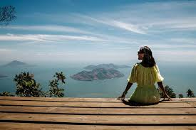

Espíritu de La Montaña
Conchagua, La Unión Oriente


Ubicado en la cima del volcán Conchagua, en La Unión, en el extremo oriental de El Salvador, el Mirador Espíritu de la Montaña es un destino turístico que combina naturaleza, aventura y espiritualidad. Su nombre no es casualidad: Luis Díaz, propietario del mirador, descubrió que una fuerza externa impedía construir en las faldas del volcán.
Al investigar, encontró que se trataba de un espíritu que se oponía a la edificación. Díaz realizó un ritual para solicitar permiso, y el espíritu aceptó con la condición de no explotar los recursos del lugar. Tras esa experiencia, se inició la construcción y la zona fue bautizada como Espíritu de la Montaña.
A diferencia de otros miradores del país, donde se visualiza la ciudad, alguna zona montañosa o un lago, este mirador ofrece una vista espectacular del Golfo de Fonseca y sus islas. Desde su mirador, los visitantes pueden contemplar panorámicas del Golfo de Fonseca y las islas de El Salvador, Honduras y Nicaragua. Las vistas son especialmente impresionantes al anochecer, cuando también se puede apreciar la ciudad de La Unión iluminada a lo lejos.
El sitio ofrece áreas para acampar, senderos para caminatas y servicios básicos como sanitarios y una tienda. El clima es tropical, con temperaturas cálidas durante el día y frescas por la noche, especialmente en la cima del volcán.
Por $2 adicionales, los turistas pueden vivir la experiencia de acampar una noche en el volcán, aunque deben llevar sus propias tiendas de campaña. El Espíritu de la Montaña está abierto de lunes a domingo, de 7 a.m. a 8 p.m., y trabaja por reservaciones al número 7484-9950. El mirador se encuentra en el cantón Yologual, municipio de Conchagua, a aproximadamente 184 km de San Salvador, y se accede por la Carretera Litoral CA-2 hasta llegar a Conchagua, desde donde se toma un transporte 4x4 hasta el mirador.

Foto al atardecer
Algunos momentos son tan hermosos que no puedes evitar querer guardarlos para siempre. Este es uno de ellos.

Lugar para reflexionar
Encuentra tu centro en la cima del mundo. Aquí el ruido se apaga, el horizonte se abre y solo quedas tú.

Zona de Camping
Despierta antes que el sol y gánate el mejor espectáculo de tu vida. Acampa en las alturas.

Mirador
Sube, siéntate y respira. Desde aquí arriba todo toma perspectiva. La vista es solo tuya.